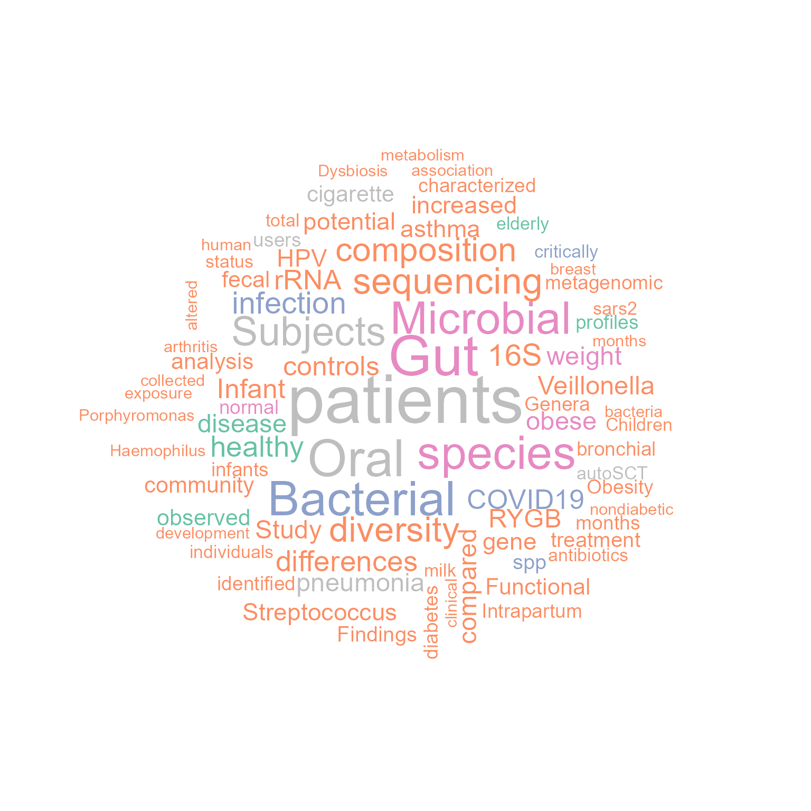
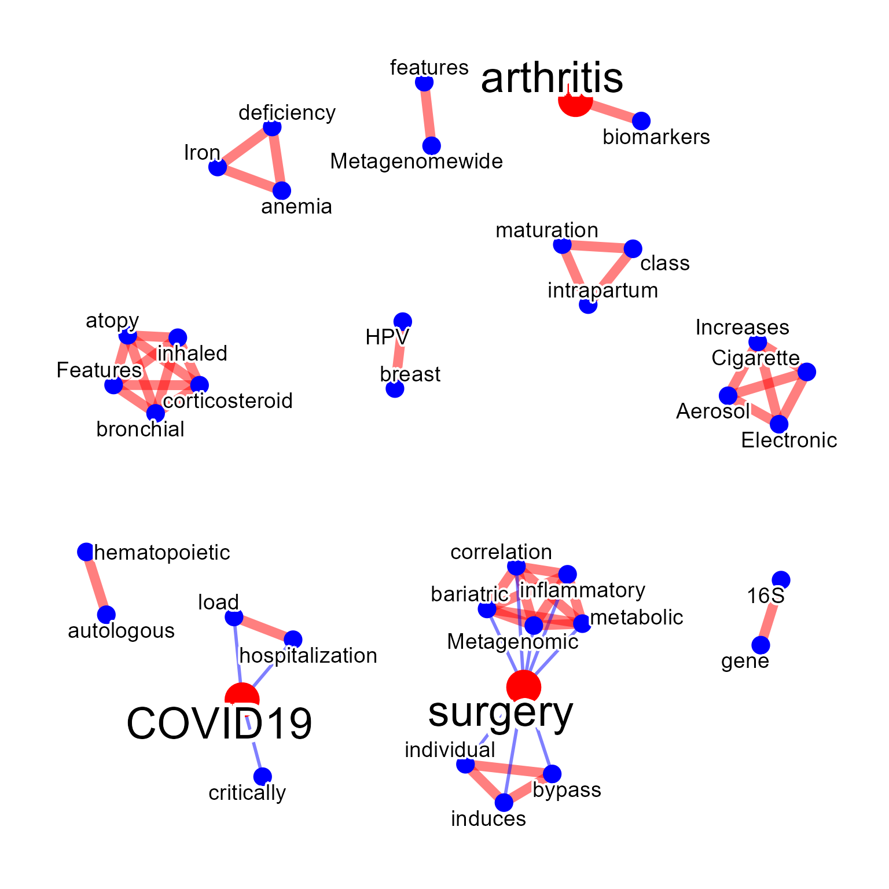
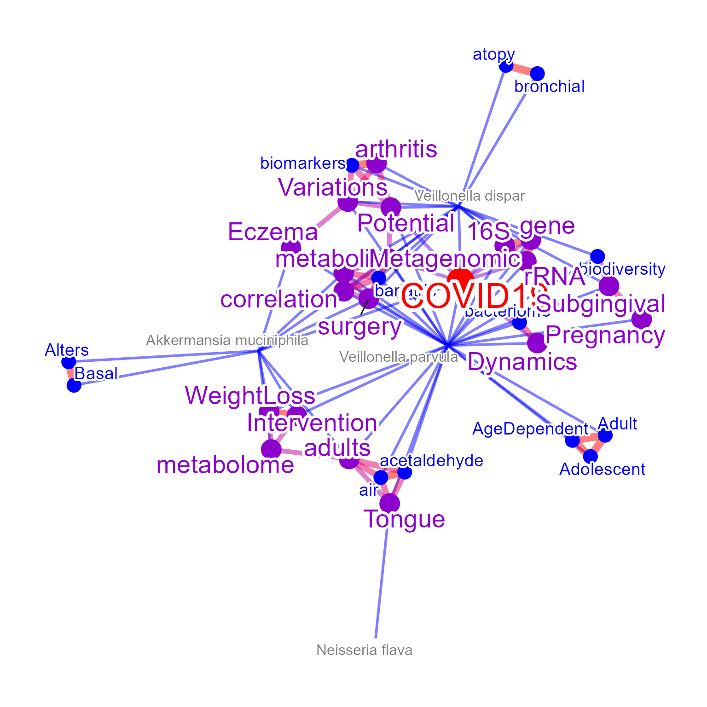
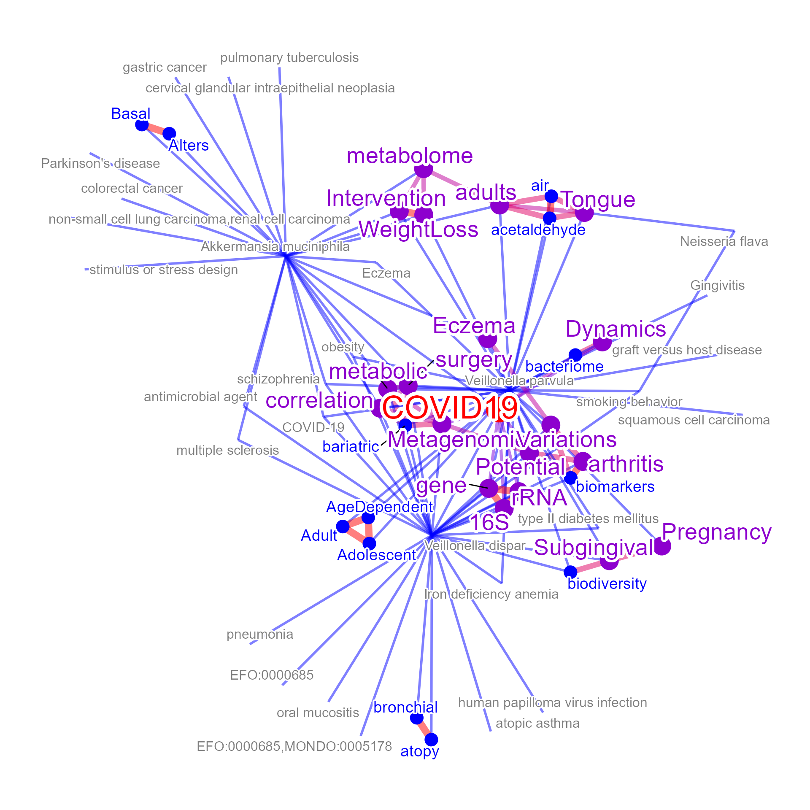
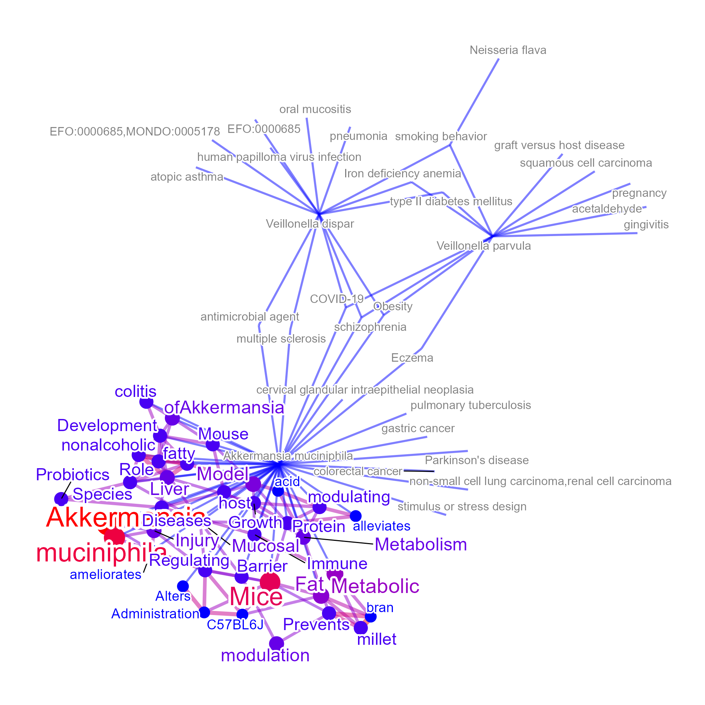

Mining microbiome-related literature
Noriaki Sato
microbiome_usage.RmdThe general usage for mining the information related to microbiome-related signatures.
We use BugSigDB, and its R port bugsigdbr to obtain the curated
dataset of the relationship with bacterial taxonomy and human diseases
(Geistlinger et al. 2022).
Users can query microbiome names, which will be searched for MetaPhlAn
taxonomic annotation. If target="title", the title of the
corresponding articles will be summarized.
basic <- wcBSDB(c("Veillonella dispar","Neisseria flava"),tag=FALSE,
curate=TRUE,target="title",pre=TRUE,cl=snow::makeCluster(12),
pal=RColorBrewer::brewer.pal(10, "Set2"),numWords=80,min.freq=1)## Input microbes: 2
## Found 17 entries for Veillonella dispar
## Found 1 entries for Neisseria flava
## Including 28 entries ...
## filter based on BugSigDB
## Filtering 0 words (frequency and/or tfidf) ...
basic@freqDf |> head()## word freq
## gut Gut 8
## oral Oral 5
## patients patients 5
## study study 3
## arthritis arthritis 2
## association association 2
basic@wc If
If target="abstract", the corresponding abstract will be
fetched and be summarized.
basic2 <- wcBSDB(c("Veillonella dispar","Neisseria flava"),tag=TRUE,
curate=TRUE,target="abstract",pre=TRUE,cl=snow::makeCluster(12),
pal=RColorBrewer::brewer.pal(10, "Set2"),numWords=80)## Input microbes: 2
## Found 17 entries for Veillonella dispar
## Found 1 entries for Neisseria flava
## Including 28 entries ...
## Target is abstract ...
## Querying PubMed for 17 pmids ...
## Querying without API key ...
## filter based on BugSigDB
## Filtering 0 words (frequency and/or tfidf) ...
## Multiscale bootstrap... Done.
basic2@freqDf |> head()## word freq
## patients patients 37
## gut Gut 30
## oral Oral 27
## bacterial Bacterial 25
## species species 24
## microbial Microbial 23
basic2@wc
For successful visualization, pre-caculated TF-IDF and frequency data
frame is available and one can use them to filter the highly occurring
words, or the other prefiltering option used in
wcGeneSummary.
rmwords <- wcGeneSummary:::allTfIdfBSDB
filter <- rmwords[rmwords$tfidf>quantile(rmwords$tfidf, 0.95),]
filter |> head()## tfidf word
## microbiome 36.97275 microbiome
## gut 34.20444 gut
## patients 32.38373 patients
## microbiota 31.96498 microbiota
## cancer 24.63359 cancer
## oral 22.65245 oralThe network visualization is possible by enabling
plotType="network".
net <- wcBSDB(c("Veillonella dispar","Neisseria flava"),
curate=TRUE,target="title",pre=TRUE,plotType="network",
additionalRemove=filter$word, corThresh=0.2,
numWords=40)## Input microbes: 2
## Found 17 entries for Veillonella dispar
## Found 1 entries for Neisseria flava
## Including 28 entries ...
## filter based on BugSigDB
## Filtering 0 words (frequency and/or tfidf) ...
net@net
The words-to-species relationship can be plotted by
mbPlot=TRUE.
net2 <- wcBSDB(c("Veillonella dispar","Neisseria flava",
"Veillonella parvula","Akkermansia muciniphila"), mbPlot=TRUE,
curate=TRUE,target="title",pre=TRUE,plotType="network",
additionalRemove=filter$word,
numWords=40, corThresh=0.2, colorText=TRUE)## Input microbes: 4
## Found 17 entries for Veillonella dispar
## Found 1 entries for Neisseria flava
## Found 20 entries for Veillonella parvula
## Found 21 entries for Akkermansia muciniphila
## Including 90 entries ...
## filter based on BugSigDB
## Filtering 0 words (frequency and/or tfidf) ...
net2@net
As the BugSigDB contains the relationship between bacterial taxonomy
and disease, disease name can also be plotted. When
disPlot=TRUE, the mbPlot will be set to
TRUE by default.
net3 <- wcBSDB(c("Veillonella dispar","Neisseria flava",
"Veillonella parvula","Akkermansia muciniphila"), mbPlot=TRUE,
curate=TRUE,target="title",pre=TRUE,plotType="network",
additionalRemove=filter$word, disPlot=TRUE,
numWords=40, corThresh=0.2, colorText=TRUE)## Input microbes: 4
## Found 17 entries for Veillonella dispar
## Found 1 entries for Neisseria flava
## Found 20 entries for Veillonella parvula
## Found 21 entries for Akkermansia muciniphila
## Including 90 entries ...
## filter based on BugSigDB
## Filtering 0 words (frequency and/or tfidf) ...
net3@net
Other than curated databases, the PubMed query can also be performed
with setting curate=FALSE. This way, the text information
of the latest literature for the microbes and diseases can be plotted.
The options for use in function obtaining PubMed information can be
specified to abstArg in list format.
net4 <- wcBSDB(c("Veillonella dispar","Neisseria flava",
"Veillonella parvula","Akkermansia muciniphila"), mbPlot=TRUE,
curate=FALSE,target="title",pre=TRUE,plotType="network",
additionalRemove=filter$word, disPlot=TRUE,
numWords=40, corThresh=0.2, colorText=TRUE,
abstArg = list(retMax=80, sortOrder="pubdate"))## Input microbes: 4
## Found 17 entries for Veillonella dispar
## Found 1 entries for Neisseria flava
## Found 20 entries for Veillonella parvula
## Found 21 entries for Akkermansia muciniphila
## Including 90 entries ...
## Proceeding without API key
## filter based on BugSigDB
## Filtering 0 words (frequency and/or tfidf) ...
net4@net
## R version 4.2.2 (2022-10-31 ucrt)
## Platform: x86_64-w64-mingw32/x64 (64-bit)
## Running under: Windows 10 x64 (build 22621)
##
## Matrix products: default
##
## locale:
## [1] LC_COLLATE=Japanese_Japan.utf8 LC_CTYPE=Japanese_Japan.utf8
## [3] LC_MONETARY=Japanese_Japan.utf8 LC_NUMERIC=C
## [5] LC_TIME=Japanese_Japan.utf8
##
## attached base packages:
## [1] stats graphics grDevices utils datasets methods base
##
## other attached packages:
## [1] RColorBrewer_1.1-3 ggraph_2.1.0 ggplot2_3.4.0
## [4] wcGeneSummary_0.99.0 BiocStyle_2.26.0
##
## loaded via a namespace (and not attached):
## [1] GeneSummary_0.99.4 colorspace_2.0-3 rjson_0.2.21
## [4] ISOcodes_2022.09.29 ellipsis_0.3.2 rprojroot_2.0.3
## [7] XVector_0.38.0 ggdendro_0.1.23 base64enc_0.1-3
## [10] GlobalOptions_0.1.2 fs_1.5.2 rstudioapi_0.14
## [13] farver_2.1.1 graphlayouts_0.8.4 ggrepel_0.9.2
## [16] bit64_4.0.5 AnnotationDbi_1.60.0 fansi_1.0.3
## [19] xml2_1.3.3 codetools_0.2-18 cachem_1.0.6
## [22] knitr_1.41 polyclip_1.10-4 jsonlite_1.8.4
## [25] dbplyr_2.3.0 png_0.1-8 graph_1.76.0
## [28] ggforce_0.4.1 shiny_1.7.4 BiocManager_1.30.19
## [31] bugsigdbr_1.5.3 rentrez_1.2.3 compiler_4.2.2
## [34] httr_1.4.4 assertthat_0.2.1 fastmap_1.1.0
## [37] cli_3.6.0 later_1.3.0 tweenr_2.0.2
## [40] htmltools_0.5.4 tools_4.2.2 igraph_1.3.5
## [43] NLP_0.2-1 gtable_0.3.1 glue_1.6.2
## [46] GenomeInfoDbData_1.2.9 dplyr_1.0.10 rappdirs_0.3.3
## [49] Rcpp_1.0.9 slam_0.1-50 Biobase_2.58.0
## [52] jquerylib_0.1.4 pkgdown_2.0.7 vctrs_0.5.1
## [55] Biostrings_2.66.0 xfun_0.36 stringr_1.5.0
## [58] stopwords_2.3 mime_0.12 lifecycle_1.0.3
## [61] pvclust_2.2-0 dendextend_1.16.0 XML_3.99-0.13
## [64] org.Hs.eg.db_3.16.0 zlibbioc_1.44.0 MASS_7.3-58.1
## [67] scales_1.2.1 tidygraph_1.2.2 ragg_1.2.5
## [70] promises_1.2.0.1 parallel_4.2.2 cyjShiny_1.0.34
## [73] curl_5.0.0 yaml_2.3.6 memoise_2.0.1
## [76] gridExtra_2.3 yulab.utils_0.0.6 sass_0.4.4
## [79] stringi_1.7.12 RSQLite_2.2.20 highr_0.10
## [82] S4Vectors_0.36.1 desc_1.4.2 filelock_1.0.2
## [85] BiocGenerics_0.44.0 GenomeInfoDb_1.34.6 rlang_1.0.6
## [88] pkgconfig_2.0.3 systemfonts_1.0.4 bitops_1.0-7
## [91] evaluate_0.19 purrr_1.0.1 labeling_0.4.2
## [94] htmlwidgets_1.6.1 patchwork_1.1.2 cowplot_1.1.1
## [97] bit_4.0.5 tidyselect_1.2.0 magrittr_2.0.3
## [100] bookdown_0.31 R6_2.5.1 IRanges_2.32.0
## [103] generics_0.1.3 DBI_1.1.3 pillar_1.8.1
## [106] withr_2.5.0 KEGGREST_1.38.0 RCurl_1.98-1.9
## [109] tibble_3.1.8 crayon_1.5.2 wordcloud_2.6
## [112] utf8_1.2.2 BiocFileCache_2.6.0 rmarkdown_2.19
## [115] viridis_0.6.2 GetoptLong_1.0.5 grid_4.2.2
## [118] blob_1.2.3 digest_0.6.31 xtable_1.8-4
## [121] tm_0.7-10 tidyr_1.2.1 httpuv_1.6.8
## [124] gridGraphics_0.5-1 textshaping_0.3.6 stats4_4.2.2
## [127] munsell_0.5.0 ggplotify_0.1.0 viridisLite_0.4.1
## [130] bslib_0.4.2